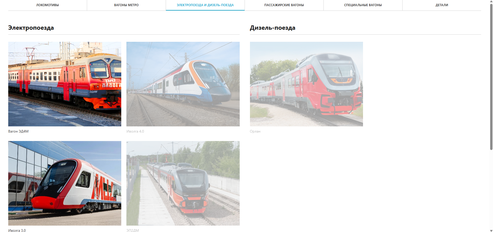

Индустриальный 3D-конфигуратор для ТМХ
3D Configurator — это результат командной работы по дисциплине «Проектная деятельность» под руководством куратора Рычкова Сергея Петровича. Проект выполняется в рамках индустриального трека для нужд Трансмашхолдинга (ТМХ). Срок реализации: 1 учебный год (февраль—май 2026).

Цели проекта
Цели зафиксированы в уставе проекта и утверждены куратором 9 февраля 2026 г.
Создать веб-конфигуратор подвижного состава ТМХ
Интерактивный 3D-вьювер на базе WebSoft (Vue 3 + Three.js) для просмотра и конфигурирования моделей вагонов, локомотивов и деталей.
Реализовать управление деталями и анимациями
Возможность скрывать/показывать детали, проигрывать анимации сборки/разборки, менять текстурные пакеты в реальном времени.
Сформировать каталог с метаданными
Структурированная база моделей с описаниями, техническими характеристиками и превью для сотрудников ТМХ.
Подготовить панель администратора
Интерфейс для добавления новых 3D-моделей и редактирования метаданных без изменения кода приложения.
Актуальность
Почему этот проект важен сегодня
Заказчик: Трансмашхолдинг (ТМХ)
Проект выполняется для крупнейшего российского производителя подвижного состава. Заказчику необходим инструмент для визуализации конфигурации поездов при обучении сотрудников и презентации продукции заказчикам.
Web-технологии в индустрии
Браузерные 3D-решения на WebGL/Three.js заменяют тяжёлые десктопные приложения. Они не требуют установки, работают на любых устройствах и легко интегрируются в корпоративные порталы ТМХ.
Сроки и контрольные точки
Проект разбит на 9 контрольных точек (февраль—май 2026): анализ, концепция, 3D-модель редуктора, базовый функционал, метаданные, контент, документация, тестирование, интеграция в ТМХ.
Архитектура решения
Монорепозиторий из двух пакетов
Скриншоты проекта



Технологический стек
Frontend
Vue 3 (Composition API, SFC), TypeScript 5.9, Vite 7.2, CSS с scoped-стилями в компонентах.
3D-графика
Three.js 0.170, GLTFLoader, OrbitControls, Raycaster, AnimationMixer, PBR-текстуры.
Тестирование
Jest 29 + ts-jest (ESM), покрытие через lcov, интеграция с Codecov в GitHub Actions.
CI/CD
GitHub Actions: установка, тесты, проверка типов, сборка библиотеки и example, артефакты.
Демонстрация работы
Видеообзор возможностей конфигуратора и принципов работы с GLTF-моделями